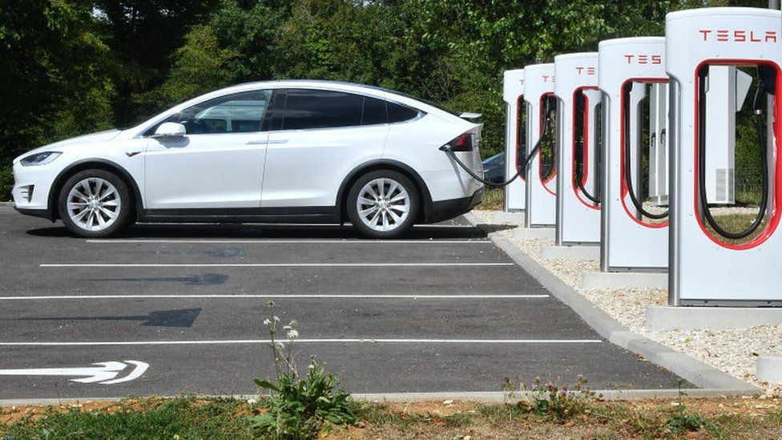
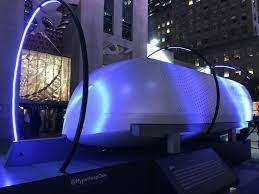

Transport in 2050
Future in 2050 for Transport

Electric Car
An EV is a shortened acronym for an electric vehicle. EVs are vehicles that are either partially or fully powered on electric power.
Electric vehicles have low running costs as they have less moving parts for maintaining and also very environmentally friendly as they use little or no fossil fuels (petrol or diesel).
The standard for modern battery electric vehicles is considered to be lithium ion batteries as they have a greater longevity and are excellent at retaining energy.

Hyperloop One
Hyperloop is a new form of ground transport currently in development by a number of companies,
It could see passengers travelling at over 700 miles an hour in floating pod which races along inside giant low-pressure tubes, either above or below ground.
Supporters argue that Hyperloop could be cheaper and faster than train or car travel,
and cheaper and less polluting than air travel. They claim that it's also quicker and cheaper to build than traditional high-speed rail.
Hyperloop could therefore be used to take the pressure off gridlocked roads, making travel between cities easier, and potentially unlocking major economic benefits as a result.

Airbus
If Airbus was getting into the business of making cars, then it seems quite obvious that the car would fly.
So Airbus teamed up with Italian design firm Italdesign to create a concept called Pop-Up.
Inside the capsule there will be a flat screen instead of typical dashboard. There would be no pedals, gears, steering wheels as well.
You would not need a flying license yet,a user can summon the vehicle via an app to book and plan trips.
The part-drone vehicle is envisioned in such a way that it functions on its own when in air and on ground.
Go Back